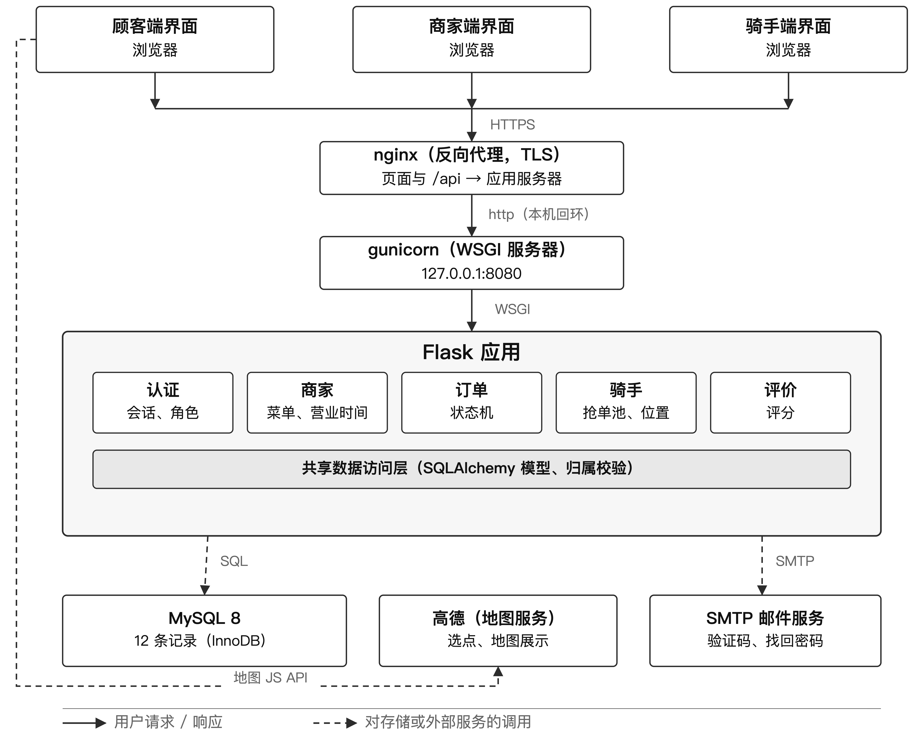

COMP3019J Web 应用开发
设计报告
团队：xLLM
成员：Fu Rao（24107744）、Liu Jing（24107741）、 Liu Zongrun（24107745）、Zhou Jiaxu（24107758）
中文译本，供组内阅读与答辩准备；正式提交请使用英文版 main.pdf。
本地的外卖服务连接三方：订餐的顾客、若干家独立餐厅，以及取餐并配送的骑手。难点并不在任何一个动作本身，而在于服务必须在自身事实不断变化的情况下运转，并且三方看到的从来不是同一份东西。
每家餐厅各自控制营业时间、菜单和备餐能力，这三者在一天当中都会变：一道菜卖完了，厨房忙起来了，店铺提前打烊。一单要真正完成，需要餐厅和骑手协调两个物理步骤——做好餐食、取走餐食——而顾客站在这两步之外，完全无从知道正在发生什么。现实中这会产生三类反复出现的失败。参与者重复劳动或互相等待；顾客打电话问餐厅订单到哪儿了，而餐厅同样答不上来；一旦出现延迟、菜品下架、地址错误或取消，正常路径就中断。底下还有一个隐私问题：如果让三方看到同一个视图，就会让一位顾客看到另一位顾客的家庭住址，让一家餐厅看到另一家的订单，并把骑手的联系方式暴露给所有人。
因此我们要构建的服务必须同时做到两件事：把订单作为三方共同操作的共享记录来持有，并按每一方所负责的范围，给他们同一份记录的不同视图。
用户角色。我们识别出三个角色。他们的需求不同，权限也不同——这种差别是设计的核心，而不是事后补上的。
为什么有用。应用覆盖一单的完整生命周期，而不是其中某一步；它用一份各方都能据以行动的共享记录取代了非正式的电话协调，让异常路径变得显式，而不是留给临场发挥。
前五个功能是必需的：没有它们，本主题的核心流程无法演示。其余是可选补充，只有在必需集合端到端跑通之后才会去做。
优先级。F1–F5 是一次连贯演示的最低要求：只有它们才能把一单从请求推进到送达，并跨两个角色完成。F6–F8 增加价值，但本主题并不要求，所以排在最后、也最先被砍掉。
约束这些功能的规则。
应用结构。图 1 展示了主要部分。三个浏览器界面——顾客、商家、骑手——通过
HTTPS 把请求发给反向代理，反向代理把每一个请求（页面以及 /api）都转给应用服务器。应用按业务域划分为若干功能模块，每个域一个模块。认证模块确定调用者是谁、持有什么角色。
餐厅模块管理店铺资料、营业时间与菜品。订单模块创建订单并执行状态机，并且是唯一写入订单状态的模块。骑手模块管理可抢单池与位置上报。评价模块记录附着于已完成订单的评分。所有模块共享同一层数据访问，因此归属校验只写在一处。数据库保存表 1 中的记录。系统用到两个外部服务：一个是地图服务，由浏览器加载，用于选点和绘制骑手位置；另一个是邮件服务，只用于一次性验证码（验证码登录与重置密码）。配送半径由服务器自己计算，不经过地图服务。

数据。表 1 列出应用保存的记录、每条记录中存的信息，以及使用或更新它的功能。
| 记录 | 存储的信息 | 使用或更新它的功能 |
|---|---|---|
| 用户 users |
角色、用户名、邮箱、显示名、密码哈希 | F1 创建并认证；其余功能读取它来判断权限。 |
| 餐厅 restaurants |
店主、名称、地址与坐标、配送半径、起送价、营业开关 | F2 更新；F3 读取它列出店铺并校验配送范围。 |
| 骑手档案 rider_profiles |
骑手、在线标记、车型、服务半径 | F1 创建；骑手离线时 F4 拒绝其抢单。 |
| 营业时间 opening_hours |
餐厅、星期、开闭时间、休息标记 | F2 维护；F3 用它拒绝非营业时段的订单。 |
| 菜品 menu_items |
餐厅、名称、价格、热量、库存、可售标记 | F2 维护；F3 展示，并把价格复制进订单。 |
| 地址 customer_addresses |
顾客、标签、联系人、地址文本、坐标、默认标记 | F1 拥有；F3 选用其一并复制进订单。 |
| 订单 orders |
顾客、餐厅、骑手、状态、地址与金额快照、距离、时间戳 | F3 创建；F4、F5 更新与读取状态；F6 把评价挂到它上面。 |
| 订单明细 order_items |
订单、菜品引用、名称与价格快照、数量 | F3 写入；F4 读取，用来告诉厨房要做什么。 |
| 评价 reviews |
订单、评价者、对象、评分、评论 | F6 创建；F2 与 F5 读回评分。 |
| 骑手位置 rider_locations |
骑手、订单、坐标、精度、时间 | F7 逐条追加；F5 读最新一条用于展示。 |
| 优惠券与领取 coupons · user_coupons |
码、归属、折扣、门槛、领取状态 | F8 发放、领取并在订单上核销。 |
| 验证码 email_codes |
邮箱、用途、哈希后的码、有效期、尝试次数 | F1 在验证码登录与重置密码时发送并校验。 |
记录之间如何连接。订单是把各方连起来的那条记录：它指明下单的顾客、必须做菜的餐厅，以及（被抢下之后的）配送骑手，因此三个角色都在同一行上操作。一个订单拥有多条 订单明细，每道菜一条；每条明细指向一个菜品，但同时自带名称与价格的副本，这正是菜单可以变化而不改写历史的原因。餐厅拥有自己的营业时间与菜品，顾客拥有一组地址；所选地址同样被复制进订单，理由一致。评价附着在已完成订单上，并指明对象——餐厅或骑手——而订单本身才证明评价者有权写这条评价。骑手位置在配送过程中逐条追加到订单上。
用户流程。以“下单并完成一单”这个任务为例。
改变流程的情形：取消。假设顾客想在厨房已经开始备餐之后取消。正常路径没有免费的出口，因为原料已经投入。订单模块因此拒绝顾客的取消请求，并提示其联系餐厅，由餐厅决定。若餐厅同意，订单转为 cancelled，取消方与原因连同时间戳一起被记录；订单从餐厅队列与骑手池中消失，已支付的款项被标记为已退款。若餐厅拒绝，订单就沿正常路径继续。同一条规则也覆盖相反的时间点：订单仍处于 pending 或 accepted 时还没开始做菜，顾客可以直接取消，无需餐厅动作。因此这条规则是订单状态的性质，而不是请求来自哪个界面的性质。
浏览器。用 HTML5 与 CSS3 负责结构与呈现；用浏览器的 fetch API
做交互、在不刷新页面的情况下调用服务器；服务器端用 Jinja2 模板渲染三个角色界面。浏览器只负责呈现与输入校验，包括采集坐标的地图。
服务器。Python 3.10 + Flask 3.1，使用 Werkzeug 的密码哈希与 Flask 会话，数据访问层用 SQLAlchemy 2.0。服务器是应用真正所在的地方：它认证每一个请求，逐条记录判断调用者是否有权读取或修改，执行订单状态机，并且是唯一持有数据库凭据的部分。
数据存储。MySQL 8，使用 InnoDB 与 utf8mb4，保存表 1 中的十二条记录。关系型存储是合适的选择，因为上述规则本身就是关系型的：归属是行上的一个列；抢单唯一性是一条带
rider_id IS NULL 条件的 UPDATE；同一订单、同一对象的重复评价会被拒绝；而订单历史的保全靠复制值，而不是连接实时数据。外键在记录于角色之间传递时保证订单图的一致性。
为什么这套组合合适。服务器与数据层使用同一种语言，使归属校验集中在一处；服务端渲染页面配合异步请求，让三个界面保持简单，同时仍能在不刷新页面的情况下更新进度；关系模型把本主题自己的语言——可用性、归属、审批——直接表达为约束。
课堂之外的技术。
分工与计划。分工按目录划分：Zhou Jiaxu 负责顾客端界面，Fu Rao 负责商家端界面，Liu Jing 负责骑手端界面，Liu Zongrun 负责共享层与部署。共享层在三个界面开工之前先行冻结；Milestone 2 打通一单的端到端流程，Milestone 3 补齐可选功能与异常流程。